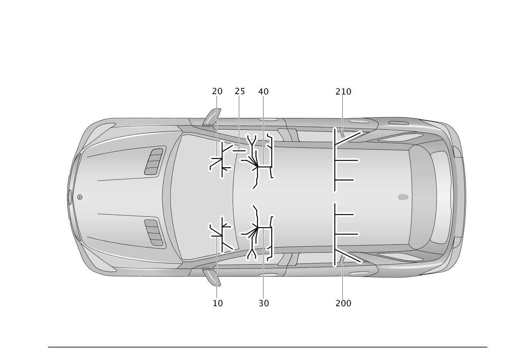

| № | Артикул | Название | Кол. | Примечание | Ограничение |
|---|---|---|---|---|---|
| 10 | A 166 440 01 08 | Электрический жгут (ELEKTRISCHER LEITUNGSSATZ) | 1 | КОРОБ СИДЕН. СЛЕВА | 802/803/804 |
| 10 | A 166 440 01 08 | Электрический жгут (ELEKTRISCHER LEITUNGSSATZ) | 1 | КОРОБ СИДЕН. СЛЕВА | 805 |
| 10 | A 166 540 42 02 | Электрический жгут (ELEKTRISCHER LEITUNGSSATZ) | 1 | КОРОБ СИДЕН. СЛЕВА | 806 |
| 10 | A 166 540 46 15 | Электрический жгут (ELEKTRISCHER LEITUNGSSATZ) | 1 | КОРОБ СИДЕН. СЛЕВА | (806/807/808/809/800) |
| 10 | A 166 440 69 06 | Электрический жгут (ELEKTRISCHER LEITUNGSSATZ) | 1 | КОРОБ СИДЕН. СЛЕВА | (401/876/876+(401/873))+(802/803/804) |
| 10 | A 166 440 69 06 | Электрический жгут (ELEKTRISCHER LEITUNGSSATZ) | 1 | КОРОБ СИДЕН. СЛЕВА | 805+876 |
| 10 | A 166 440 69 06 | Электрический жгут (ELEKTRISCHER LEITUNGSSATZ) | 1 | КОРОБ СИДЕН. СЛЕВА | 805+876+(401/873) |
| 10 | A 166 540 44 02 | Электрический жгут (ELEKTRISCHER LEITUNGSSATZ) | 1 | КОРОБ СИДЕН. СЛЕВА | 806+876 |
| 10 | A 166 540 44 02 | Электрический жгут (ELEKTRISCHER LEITUNGSSATZ) | 1 | КОРОБ СИДЕН. СЛЕВА | 806+876+(401/873) |
| 10 | A 166 540 48 15 | Электрический жгут (ELEKTRISCHER LEITUNGSSATZ) | 1 | КОРОБ СИДЕН. СЛЕВА | (401/401+876)+(806/807/808/809/800) |
| 10 | A 166 540 47 15 | Электрический жгут (ELEKTRISCHER LEITUNGSSATZ) | 1 | КОРОБ СИДЕН. СЛЕВА | 876+(806/807/808/809/800) |
| 10 | A 166 440 66 10 | Электрический жгут (ELEKTRISCHER LEITUNGSSATZ) | 1 | КОРОБ СИДЕН. СЛЕВА | 873+(802/803/804) |
| 10 | A 166 440 66 10 | Электрический жгут (ELEKTRISCHER LEITUNGSSATZ) | 1 | КОРОБ СИДЕН. СЛЕВА | 805+873 |
| 10 | A 166 540 43 02 | Электрический жгут (ELEKTRISCHER LEITUNGSSATZ) | 1 | КОРОБ СИДЕН. СЛЕВА | 806+873 |
| 10 | A 166 440 76 06 | Электрический жгут (ELEKTRISCHER LEITUNGSSATZ) | 1 | КОРОБ СИДЕН. СЛЕВА Рулевое управление: Влево | 275+(802/803/804) |
| 10 | A 166 440 76 06 | Электрический жгут (ELEKTRISCHER LEITUNGSSATZ) | 1 | КОРОБ СИДЕН. СЛЕВА Рулевое управление: Влево | 805+275 |
| 10 | A 166 540 46 02 | Электрический жгут (ELEKTRISCHER LEITUNGSSATZ) | 1 | КОРОБ СИДЕН. СЛЕВА Рулевое управление: Влево | 806+275 |
| 10 | A 166 540 49 15 | Электрический жгут (ELEKTRISCHER LEITUNGSSATZ) | 1 | КОРОБ СИДЕН. СЛЕВА Рулевое управление: Влево | 275+(806/807/808/809/800) |
| 10 | A 166 440 76 06 | Электрический жгут (ELEKTRISCHER LEITUNGSSATZ) | 1 | КОРОБ СИДЕН. СЛЕВА Рулевое управление: Влево | (275+(401/873))+(802/803/804) |
| 10 | A 166 440 76 06 | Электрический жгут (ELEKTRISCHER LEITUNGSSATZ) | 1 | КОРОБ СИДЕН. СЛЕВА Рулевое управление: Влево | 805+275+(401/873) |
| 10 | A 166 540 46 02 | Электрический жгут (ELEKTRISCHER LEITUNGSSATZ) | 1 | КОРОБ СИДЕН. СЛЕВА Рулевое управление: Влево | 806+275+(401/873) |
| 10 | A 166 540 51 15 | Электрический жгут (ELEKTRISCHER LEITUNGSSATZ) | 1 | КОРОБ СИДЕН. СЛЕВА Рулевое управление: Влево | (401+275/401+876+275)+(806/807/808/809/800) |
| 10 | A 166 440 75 07 | Электрический жгут (ELEKTRISCHER LEITUNGSSATZ) | 1 | КОРОБ СИДЕН. СЛЕВА Рулевое управление: Влево | 275+876+(802/803/804) |
| 10 | A 166 440 75 07 | Электрический жгут (ELEKTRISCHER LEITUNGSSATZ) | 1 | КОРОБ СИДЕН. СЛЕВА Рулевое управление: Влево | 805+275+876 |
| 10 | A 166 540 45 02 | Электрический жгут (ELEKTRISCHER LEITUNGSSATZ) | 1 | КОРОБ СИДЕН. СЛЕВА Рулевое управление: Влево | 806+275+876 |
| 10 | A 166 540 50 15 | Электрический жгут (ELEKTRISCHER LEITUNGSSATZ) | 1 | КОРОБ СИДЕН. СЛЕВА Рулевое управление: Влево | 876+275+(806/807/808/809/800) |
| 10 | A 166 440 75 07 | Электрический жгут (ELEKTRISCHER LEITUNGSSATZ) | 1 | КОРОБ СИДЕН. СЛЕВА Рулевое управление: Влево | (275+876+(401/873))+(802/803/804) |
| 10 | A 166 440 75 07 | Электрический жгут (ELEKTRISCHER LEITUNGSSATZ) | 1 | КОРОБ СИДЕН. СЛЕВА Рулевое управление: Влево | 805+275+876+(401/873) |
| 10 | A 166 540 45 02 | Электрический жгут (ELEKTRISCHER LEITUNGSSATZ) | 1 | КОРОБ СИДЕН. СЛЕВА Рулевое управление: Влево | 806+275+876+(401/873) |
| 10 | A 166 440 76 06 | Электрический жгут (ELEKTRISCHER LEITUNGSSATZ) | 1 | КОРОБ СИДЕН. СЛЕВА Рулевое управление: Вправо | 241+275+(802/803/804) |
| 10 | A 166 440 76 06 | Электрический жгут (ELEKTRISCHER LEITUNGSSATZ) | 1 | КОРОБ СИДЕН. СЛЕВА Рулевое управление: Вправо | 805+241+275 |
| 10 | A 166 540 46 02 | Электрический жгут (ELEKTRISCHER LEITUNGSSATZ) | 1 | КОРОБ СИДЕН. СЛЕВА Рулевое управление: Вправо | 806+241+275 |
| 10 | A 166 540 49 15 | Электрический жгут (ELEKTRISCHER LEITUNGSSATZ) | 1 | КОРОБ СИДЕН. СЛЕВА Рулевое управление: Вправо | 275+241+(806/807/808/809/800) |
| 10 | A 166 440 76 06 | Электрический жгут (ELEKTRISCHER LEITUNGSSATZ) | 1 | КОРОБ СИДЕН. СЛЕВА Рулевое управление: Вправо | (241+275+(401/873))+(802/803/804) |
| 10 | A 166 440 76 06 | Электрический жгут (ELEKTRISCHER LEITUNGSSATZ) | 1 | КОРОБ СИДЕН. СЛЕВА Рулевое управление: Вправо | 805+241+275+(401/873) |
| 10 | A 166 540 46 02 | Электрический жгут (ELEKTRISCHER LEITUNGSSATZ) | 1 | КОРОБ СИДЕН. СЛЕВА Рулевое управление: Вправо | 806+241+275+(401/873) |
| 10 | A 166 440 75 07 | Электрический жгут (ELEKTRISCHER LEITUNGSSATZ) | 1 | КОРОБ СИДЕН. СЛЕВА Рулевое управление: Вправо | 241+275+876+(802/803/804) |
| 10 | A 166 440 75 07 | Электрический жгут (ELEKTRISCHER LEITUNGSSATZ) | 1 | КОРОБ СИДЕН. СЛЕВА Рулевое управление: Вправо | 805+241+275+876 |
| 10 | A 166 540 45 02 | Электрический жгут (ELEKTRISCHER LEITUNGSSATZ) | 1 | КОРОБ СИДЕН. СЛЕВА Рулевое управление: Вправо | 806+241+275+876 |
| 10 | A 166 540 50 15 | Электрический жгут (ELEKTRISCHER LEITUNGSSATZ) | 1 | КОРОБ СИДЕН. СЛЕВА Рулевое управление: Вправо | 876+275+241+(806/807/808/809/800) |
| 10 | A 166 440 75 07 | Электрический жгут (ELEKTRISCHER LEITUNGSSATZ) | 1 | КОРОБ СИДЕН. СЛЕВА Рулевое управление: Вправо | (241+275+876+(401/873))+(802/803/804) |
| 10 | A 166 440 75 07 | Электрический жгут (ELEKTRISCHER LEITUNGSSATZ) | 1 | КОРОБ СИДЕН. СЛЕВА Рулевое управление: Вправо | 805+241+275+876+(401/873) |
| 10 | A 166 540 45 02 | Электрический жгут (ELEKTRISCHER LEITUNGSSATZ) | 1 | КОРОБ СИДЕН. СЛЕВА Рулевое управление: Вправо | 806+241+275+876+(401/873) |
| 10 | A 166 540 51 15 | Электрический жгут (ELEKTRISCHER LEITUNGSSATZ) | 1 | КОРОБ СИДЕН. СЛЕВА Рулевое управление: Вправо | (401+275+241/401+876+275+241)+(806/807/808/809/800) |
| 10 | A 166 540 75 04 | Электрический жгут (ELEKTRISCHER LEITUNGSSATZ) | 1 | КОРОБ СИДЕН. СЛЕВА [402] БОЛЬШЕ НЕ ПОСТАВЛЯЕТСЯ | 805+401 |
| 10 | A 166 540 76 04 | Электрический жгут (ELEKTRISCHER LEITUNGSSATZ) | 1 | КОРОБ СИДЕН. СЛЕВА | 806+401 |
| 20 | A 166 440 01 08 | Электрический жгут (ELEKTRISCHER LEITUNGSSATZ) | 1 | ПОДУШКА СИДЕН. СПРАВА | 802/803/804 |
| 20 | A 166 440 01 08 | Электрический жгут (ELEKTRISCHER LEITUNGSSATZ) | 1 | ПОДУШКА СИДЕН. СПРАВА | 805 |
| 20 | A 166 540 42 02 | Электрический жгут (ELEKTRISCHER LEITUNGSSATZ) | 1 | ПОДУШКА СИДЕН. СПРАВА | 806 |
| 20 | A 166 440 69 06 | Электрический жгут (ELEKTRISCHER LEITUNGSSATZ) | 1 | ПОДУШКА СИДЕН. СПРАВА | (401/876/876+(401/873))+(802/803/804) |
| 20 | A 166 440 69 06 | Электрический жгут (ELEKTRISCHER LEITUNGSSATZ) | 1 | ПОДУШКА СИДЕН. СПРАВА | 805+876 |
| 20 | A 166 440 69 06 | Электрический жгут (ELEKTRISCHER LEITUNGSSATZ) | 1 | ПОДУШКА СИДЕН. СПРАВА | 805+876+(401/873) |
| 20 | A 166 540 44 02 | Электрический жгут (ELEKTRISCHER LEITUNGSSATZ) | 1 | ПОДУШКА СИДЕН. СПРАВА | 806+876 |
| 20 | A 166 540 44 02 | Электрический жгут (ELEKTRISCHER LEITUNGSSATZ) | 1 | ПОДУШКА СИДЕН. СПРАВА | 806+876+(401/873) |
| 20 | A 166 540 46 15 | Электрический жгут (ELEKTRISCHER LEITUNGSSATZ) | 1 | ПОДУШКА СИДЕН. СПРАВА | (806/807/808/809/800) |
| 20 | A 166 540 47 15 | Электрический жгут (ELEKTRISCHER LEITUNGSSATZ) | 1 | ПОДУШКА СИДЕН. СПРАВА | 876+(806/807/808/809/800) |
| 20 | A 166 440 66 10 | Электрический жгут (ELEKTRISCHER LEITUNGSSATZ) | 1 | ПОДУШКА СИДЕН. СПРАВА | 873+(802/803/804) |
| 20 | A 166 440 66 10 | Электрический жгут (ELEKTRISCHER LEITUNGSSATZ) | 1 | ПОДУШКА СИДЕН. СПРАВА | 805+873 |
| 20 | A 166 540 43 02 | Электрический жгут (ELEKTRISCHER LEITUNGSSATZ) | 1 | ПОДУШКА СИДЕН. СПРАВА | 806+873 |
| 20 | A 166 440 76 06 | Электрический жгут (ELEKTRISCHER LEITUNGSSATZ) | 1 | ПОДУШКА СИДЕН. СПРАВА Рулевое управление: Влево | 242+275+(802/803/804) |
| 20 | A 166 440 76 06 | Электрический жгут (ELEKTRISCHER LEITUNGSSATZ) | 1 | ПОДУШКА СИДЕН. СПРАВА Рулевое управление: Влево | 805+242+275 |
| 20 | A 166 540 46 02 | Электрический жгут (ELEKTRISCHER LEITUNGSSATZ) | 1 | ПОДУШКА СИДЕН. СПРАВА Рулевое управление: Влево | 806+242+275 |
| 20 | A 166 540 49 15 | Электрический жгут (ELEKTRISCHER LEITUNGSSATZ) | 1 | ПОДУШКА СИДЕН. СПРАВА Рулевое управление: Влево | 275+242+(806/807/808/809/800) |
| 20 | A 166 440 76 06 | Электрический жгут (ELEKTRISCHER LEITUNGSSATZ) | 1 | ПОДУШКА СИДЕН. СПРАВА Рулевое управление: Влево | (242+275+(401/873))+(802/803/804) |
| 20 | A 166 440 76 06 | Электрический жгут (ELEKTRISCHER LEITUNGSSATZ) | 1 | ПОДУШКА СИДЕН. СПРАВА Рулевое управление: Влево | 805+242+275+(401/873) |
| 20 | A 166 540 46 02 | Электрический жгут (ELEKTRISCHER LEITUNGSSATZ) | 1 | ПОДУШКА СИДЕН. СПРАВА Рулевое управление: Влево | 806+242+275+(401/873) |
| 20 | A 166 440 75 07 | Электрический жгут (ELEKTRISCHER LEITUNGSSATZ) | 1 | ПОДУШКА СИДЕН. СПРАВА Рулевое управление: Влево | 242+275+876+(802/803/804) |
| 20 | A 166 440 75 07 | Электрический жгут (ELEKTRISCHER LEITUNGSSATZ) | 1 | ПОДУШКА СИДЕН. СПРАВА Рулевое управление: Влево | 805+242+275+876 |
| 20 | A 166 540 45 02 | Электрический жгут (ELEKTRISCHER LEITUNGSSATZ) | 1 | ПОДУШКА СИДЕН. СПРАВА Рулевое управление: Влево | 806+242+275+876 |
| 20 | A 166 540 50 15 | Электрический жгут (ELEKTRISCHER LEITUNGSSATZ) | 1 | ПОДУШКА СИДЕН. СПРАВА Рулевое управление: Влево | 876+275+242+(806/807/808/809/800) |
| 20 | A 166 440 75 07 | Электрический жгут (ELEKTRISCHER LEITUNGSSATZ) | 1 | ПОДУШКА СИДЕН. СПРАВА Рулевое управление: Влево | (242+275+876+(401/873))+(802/803/804) |
| 20 | A 166 440 75 07 | Электрический жгут (ELEKTRISCHER LEITUNGSSATZ) | 1 | ПОДУШКА СИДЕН. СПРАВА Рулевое управление: Влево | 805+242+275+876+(401/873) |
| 20 | A 166 540 45 02 | Электрический жгут (ELEKTRISCHER LEITUNGSSATZ) | 1 | ПОДУШКА СИДЕН. СПРАВА Рулевое управление: Влево | 806+242+275+876+(401/873) |
| 20 | A 166 540 51 15 | Электрический жгут (ELEKTRISCHER LEITUNGSSATZ) | 1 | ПОДУШКА СИДЕН. СПРАВА Рулевое управление: Влево | (401+275+242/401+876+275+242)+(806/807/808/809/800) |
| 20 | A 166 440 76 06 | Электрический жгут (ELEKTRISCHER LEITUNGSSATZ) | 1 | ПОДУШКА СИДЕН. СПРАВА Рулевое управление: Вправо | 275+(802/803/804) |
| 20 | A 166 440 76 06 | Электрический жгут (ELEKTRISCHER LEITUNGSSATZ) | 1 | ПОДУШКА СИДЕН. СПРАВА Рулевое управление: Вправо | 805+275 |
| 20 | A 166 540 46 02 | Электрический жгут (ELEKTRISCHER LEITUNGSSATZ) | 1 | ПОДУШКА СИДЕН. СПРАВА Рулевое управление: Вправо | 806+275 |
| 20 | A 166 540 49 15 | Электрический жгут (ELEKTRISCHER LEITUNGSSATZ) | 1 | ПОДУШКА СИДЕН. СПРАВА Рулевое управление: Вправо | 275+(806/807/808/809/800) |
| 20 | A 166 440 76 06 | Электрический жгут (ELEKTRISCHER LEITUNGSSATZ) | 1 | ПОДУШКА СИДЕН. СПРАВА Рулевое управление: Вправо | (275+(401/873))+(802/803/804) |
| 20 | A 166 440 76 06 | Электрический жгут (ELEKTRISCHER LEITUNGSSATZ) | 1 | ПОДУШКА СИДЕН. СПРАВА Рулевое управление: Вправо | 805+275+(401/873) |
| 20 | A 166 540 46 02 | Электрический жгут (ELEKTRISCHER LEITUNGSSATZ) | 1 | ПОДУШКА СИДЕН. СПРАВА Рулевое управление: Вправо | 806+275+(401/873) |
| 20 | A 166 540 51 15 | Электрический жгут (ELEKTRISCHER LEITUNGSSATZ) | 1 | ПОДУШКА СИДЕН. СПРАВА Рулевое управление: Вправо | (401+275/401+876+275)+(806/807/808/809/800) |
| 20 | A 166 440 75 07 | Электрический жгут (ELEKTRISCHER LEITUNGSSATZ) | 1 | ПОДУШКА СИДЕН. СПРАВА Рулевое управление: Вправо | 275+876+(802/803/804) |
| 20 | A 166 440 75 07 | Электрический жгут (ELEKTRISCHER LEITUNGSSATZ) | 1 | ПОДУШКА СИДЕН. СПРАВА Рулевое управление: Вправо | 805+275+876 |
| 20 | A 166 540 45 02 | Электрический жгут (ELEKTRISCHER LEITUNGSSATZ) | 1 | ПОДУШКА СИДЕН. СПРАВА Рулевое управление: Вправо | 806+275+876 |
| 20 | A 166 540 50 15 | Электрический жгут (ELEKTRISCHER LEITUNGSSATZ) | 1 | ПОДУШКА СИДЕН. СПРАВА Рулевое управление: Вправо | 876+275+(806/807/808/809/800) |
| 20 | A 166 440 75 07 | Электрический жгут (ELEKTRISCHER LEITUNGSSATZ) | 1 | ПОДУШКА СИДЕН. СПРАВА Рулевое управление: Вправо | (275+876+(401/873))+(802/803/804) |
| 20 | A 166 440 75 07 | Электрический жгут (ELEKTRISCHER LEITUNGSSATZ) | 1 | ПОДУШКА СИДЕН. СПРАВА Рулевое управление: Вправо | 805+275+876+(401/873) |
| 20 | A 166 540 45 02 | Электрический жгут (ELEKTRISCHER LEITUNGSSATZ) | 1 | ПОДУШКА СИДЕН. СПРАВА Рулевое управление: Вправо | 806+275+876+(401/873) |
| 20 | A 166 540 75 04 | Электрический жгут (ELEKTRISCHER LEITUNGSSATZ) | 1 | ПОДУШКА СИДЕН. СПРАВА [402] БОЛЬШЕ НЕ ПОСТАВЛЯЕТСЯ | 805+401 |
| 20 | A 166 540 76 04 | Электрический жгут (ELEKTRISCHER LEITUNGSSATZ) | 1 | ПОДУШКА СИДЕН. СПРАВА | 806+401 |
| 20 | A 166 540 48 15 | Электрический жгут (ELEKTRISCHER LEITUNGSSATZ) | 1 | ПОДУШКА СИДЕН. СПРАВА | (401/401+876)+(806/807/808/809/800) |
| 25 | A 166 540 48 33 | Электрический жгут (ELEKTRISCHER LEITUNGSSATZ) | 1 | Датчик веса в сиденье Рулевое управление: Влево | U10 |
| 25 | A 166 540 48 02 | Электрический жгут (ELEKTRISCHER LEITUNGSSATZ) | 1 | Датчик веса в сиденье Рулевое управление: Влево | U10 |
| 30 | A 166 440 02 08 | Электрический жгут (ELEKTRISCHER LEITUNGSSATZ) | 1 | СПИНКА СИДЕНЬЯ ВОДИТЕЛЯ СЛЕВА | (803/804/805)+-(460/494/496) |
| 30 | A 166 440 77 07 | Электрический жгут (ELEKTRISCHER LEITUNGSSATZ) | 1 | СПИНКА СИДЕНЬЯ ВОДИТЕЛЯ СЛЕВА | (803/804/805)+401+-(460/494/496) |
| 30 | A 166 440 78 07 | Электрический жгут (ELEKTRISCHER LEITUNGSSATZ) | 1 | СПИНКА СИДЕНЬЯ ВОДИТЕЛЯ СЛЕВА | (803/804/805)+U22+-(460/494/496) |
| 30 | A 166 440 78 07 | Электрический жгут (ELEKTRISCHER LEITUNGSSATZ) | 1 | СПИНКА СИДЕНЬЯ ВОДИТЕЛЯ СЛЕВА | (803/804/805)+U22+(401/873)+-(460/494/496) |
| 30 | A 166 440 58 10 | Электрический жгут (ELEKTRISCHER LEITUNGSSATZ) | 1 | СПИНКА СИДЕНЬЯ ВОДИТЕЛЯ СЛЕВА [402] БОЛЬШЕ НЕ ПОСТАВЛЯЕТСЯ | (803/804/805)+399+-(460/494/496) |
| 30 | A 166 440 58 10 | Электрический жгут (ELEKTRISCHER LEITUNGSSATZ) | 1 | СПИНКА СИДЕНЬЯ ВОДИТЕЛЯ СЛЕВА [402] БОЛЬШЕ НЕ ПОСТАВЛЯЕТСЯ | (803/804/805)+399+(401/873)+-(460/494/496) |
| 30 | A 166 440 41 13 | Электрический жгут (ELEKTRISCHER LEITUNGSSATZ) | 1 | СПИНКА СИДЕНЬЯ ВОДИТЕЛЯ СЛЕВА | (803/804/805)+U22+(864/866)+-(460/494/496) |
| 30 | A 166 440 42 13 | Электрический жгут (ELEKTRISCHER LEITUNGSSATZ) | 1 | СПИНКА СИДЕНЬЯ ВОДИТЕЛЯ СЛЕВА | (803/804/805)+(864/866)+-(460/494/496) |
| 30 | A 166 440 42 13 | Электрический жгут (ELEKTRISCHER LEITUNGSSATZ) | 1 | СПИНКА СИДЕНЬЯ ВОДИТЕЛЯ СЛЕВА | (803/804/805)+(401/873)+(864/866)+-(460/494/496) |
| 30 | A 166 440 41 13 | Электрический жгут (ELEKTRISCHER LEITUNGSSATZ) | 1 | СПИНКА СИДЕНЬЯ ВОДИТЕЛЯ СЛЕВА | (803/804/805)+U22+(401/873)+(864/866)+-(460/494/496) |
| 30 | A 166 440 43 13 | Электрический жгут (ELEKTRISCHER LEITUNGSSATZ) | 1 | СПИНКА СИДЕНЬЯ ВОДИТЕЛЯ СЛЕВА [402] БОЛЬШЕ НЕ ПОСТАВЛЯЕТСЯ | (803/804/805)+399+(864/866)+-(460/494/496) |
| 30 | A 166 440 43 13 | Электрический жгут (ELEKTRISCHER LEITUNGSSATZ) | 1 | СПИНКА СИДЕНЬЯ ВОДИТЕЛЯ СЛЕВА [402] БОЛЬШЕ НЕ ПОСТАВЛЯЕТСЯ | (803/804/805)+399+(401/873)+(864/866)+-(460/494/496) |
| 30 | A 166 440 82 07 | Электрический жгут (ELEKTRISCHER LEITUNGSSATZ) | 1 | СПИНКА СИДЕНЬЯ ВОДИТЕЛЯ СЛЕВА Рулевое управление: Влево | (803/804/805)+275+U22+-(460/494/496) |
| 30 | A 166 440 82 07 | Электрический жгут (ELEKTRISCHER LEITUNGSSATZ) | 1 | СПИНКА СИДЕНЬЯ ВОДИТЕЛЯ СЛЕВА Рулевое управление: Влево | (803/804/805)+275+U22+(401/873)+-(460/494/496) |
| 30 | A 166 440 83 07 | Электрический жгут (ELEKTRISCHER LEITUNGSSATZ) | 1 | СПИНКА СИДЕНЬЯ ВОДИТЕЛЯ СЛЕВА Рулевое управление: Влево | (803/804/805)+275+U22+(864/866)+-(460/494/496) |
| 30 | A 166 440 83 07 | Электрический жгут (ELEKTRISCHER LEITUNGSSATZ) | 1 | СПИНКА СИДЕНЬЯ ВОДИТЕЛЯ СЛЕВА Рулевое управление: Влево | (803/804/805)+275+U22+(401/873)+(864/866)+-(460/494/496) |
| 30 | A 166 440 60 10 | Электрический жгут (ELEKTRISCHER LEITUNGSSATZ) | 1 | СПИНКА СИДЕНЬЯ ВОДИТЕЛЯ СЛЕВА Рулевое управление: Влево | (803/804/805)+275+399+-(460/494/496) |
| 30 | A 166 440 60 10 | Электрический жгут (ELEKTRISCHER LEITUNGSSATZ) | 1 | СПИНКА СИДЕНЬЯ ВОДИТЕЛЯ СЛЕВА Рулевое управление: Влево | (803/804/805)+275+399+(401/873)+-(460/494/496) |
| 30 | A 166 440 61 10 | Электрический жгут (ELEKTRISCHER LEITUNGSSATZ) | 1 | СПИНКА СИДЕНЬЯ ВОДИТЕЛЯ СЛЕВА Рулевое управление: Влево [402] БОЛЬШЕ НЕ ПОСТАВЛЯЕТСЯ | (803/804/805)+275+399+(864/866)+-(460/494/496) |
| 30 | A 166 440 61 10 | Электрический жгут (ELEKTRISCHER LEITUNGSSATZ) | 1 | СПИНКА СИДЕНЬЯ ВОДИТЕЛЯ СЛЕВА Рулевое управление: Влево [402] БОЛЬШЕ НЕ ПОСТАВЛЯЕТСЯ | (803/804/805)+275+399+(401/873)+(864/866)+-(460/494/496) |
| 30 | A 166 440 82 07 | Электрический жгут (ELEKTRISCHER LEITUNGSSATZ) | 1 | СПИНКА СИДЕНЬЯ ВОДИТЕЛЯ СЛЕВА Рулевое управление: Вправо | (803/804/805)+241+275+U22+-(460/494/496) |
| 30 | A 166 440 82 07 | Электрический жгут (ELEKTRISCHER LEITUNGSSATZ) | 1 | СПИНКА СИДЕНЬЯ ВОДИТЕЛЯ СЛЕВА Рулевое управление: Вправо | (803/804/805)+241+275+U22+(401/873)+-(460/494/496) |
| 30 | A 166 440 83 07 | Электрический жгут (ELEKTRISCHER LEITUNGSSATZ) | 1 | СПИНКА СИДЕНЬЯ ВОДИТЕЛЯ СЛЕВА Рулевое управление: Вправо | (803/804/805)+241+275+U22+(864/866)+-(460/494/496) |
| 30 | A 166 440 83 07 | Электрический жгут (ELEKTRISCHER LEITUNGSSATZ) | 1 | СПИНКА СИДЕНЬЯ ВОДИТЕЛЯ СЛЕВА Рулевое управление: Вправо | (803/804/805)+241+275+U22+(401/873)+(864/866)+-(460/494/496) |
| 30 | A 166 440 60 10 | Электрический жгут (ELEKTRISCHER LEITUNGSSATZ) | 1 | СПИНКА СИДЕНЬЯ ВОДИТЕЛЯ СЛЕВА Рулевое управление: Вправо | (803/804/805)+241+275+399+-(460/494/496) |
| 30 | A 166 440 60 10 | Электрический жгут (ELEKTRISCHER LEITUNGSSATZ) | 1 | СПИНКА СИДЕНЬЯ ВОДИТЕЛЯ СЛЕВА Рулевое управление: Вправо | (803/804/805)+241+275+399+(401/873)+-(460/494/496) |
| 30 | A 166 440 61 10 | Электрический жгут (ELEKTRISCHER LEITUNGSSATZ) | 1 | СПИНКА СИДЕНЬЯ ВОДИТЕЛЯ СЛЕВА Рулевое управление: Вправо [402] БОЛЬШЕ НЕ ПОСТАВЛЯЕТСЯ | (803/804/805)+241+275+399+(864/866)+-(460/494/496) |
| 30 | A 166 440 61 10 | Электрический жгут (ELEKTRISCHER LEITUNGSSATZ) | 1 | СПИНКА СИДЕНЬЯ ВОДИТЕЛЯ СЛЕВА Рулевое управление: Вправо [402] БОЛЬШЕ НЕ ПОСТАВЛЯЕТСЯ | (803/804/805)+241+275+399+(401/873)+(864/866)+-(460/494/496) |
| 30 | A 166 440 48 13 | Электрический жгут (ELEKTRISCHER LEITUNGSSATZ) | 1 | СПИНКА СИДЕНЬЯ ВОДИТЕЛЯ СЛЕВА | (806/807/808/809/800)+-(460/494/496/835) |
| 30 | A 166 440 44 32 | Электрический жгут (ELEKTRISCHER LEITUNGSSATZ) | 1 | СПИНКА СИДЕНЬЯ ВОДИТЕЛЯ СЛЕВА | ((806/807/808/809/800)+401)+-(460/494/496/835) |
| 30 | A 166 440 45 32 | Электрический жгут (ELEKTRISCHER LEITUNGSSATZ) | 1 | СПИНКА СИДЕНЬЯ ВОДИТЕЛЯ СЛЕВА | ((806/807/808/809/800)+U22)+-(460/494/496/835) |
| 30 | A 166 440 45 32 | Электрический жгут (ELEKTRISCHER LEITUNGSSATZ) | 1 | СПИНКА СИДЕНЬЯ ВОДИТЕЛЯ СЛЕВА | ((806/807/808/809/800)+U22+(401/873))+-(460/494/496/835) |
| 30 | A 166 440 46 32 | Электрический жгут (ELEKTRISCHER LEITUNGSSATZ) | 1 | СПИНКА СИДЕНЬЯ ВОДИТЕЛЯ СЛЕВА | ((806/807/808/809/800)+399)+-(460/494/496/835) |
| 30 | A 166 440 46 32 | Электрический жгут (ELEKTRISCHER LEITUNGSSATZ) | 1 | СПИНКА СИДЕНЬЯ ВОДИТЕЛЯ СЛЕВА | ((806/807/808/809/800)+399+(401/873))+-(460/494/496/835) |
| 30 | A 166 440 47 32 | Электрический жгут (ELEKTRISCHER LEITUNGSSATZ) | 1 | СПИНКА СИДЕНЬЯ ВОДИТЕЛЯ СЛЕВА | ((806/807/808/809/800)+U22+(864/866))+-(460/494/496/835) |
| 30 | A 166 440 48 32 | Электрический жгут (ELEKTRISCHER LEITUNGSSATZ) | 1 | СПИНКА СИДЕНЬЯ ВОДИТЕЛЯ СЛЕВА | ((806/807/808/809/800)+(864/866))+-(460/494/496/835) |
| 30 | A 166 440 48 32 | Электрический жгут (ELEKTRISCHER LEITUNGSSATZ) | 1 | СПИНКА СИДЕНЬЯ ВОДИТЕЛЯ СЛЕВА | ((806/807/808/809/800)+(401/873)+(864/866))+-(460/494/496/835) |
| 30 | A 166 440 47 32 | Электрический жгут (ELEKTRISCHER LEITUNGSSATZ) | 1 | СПИНКА СИДЕНЬЯ ВОДИТЕЛЯ СЛЕВА | ((806/807/808/809/800)+U22+(401/873)+(864/866))+-(460/494/496/835) |
| 30 | A 166 440 49 32 | Электрический жгут (ELEKTRISCHER LEITUNGSSATZ) | 1 | СПИНКА СИДЕНЬЯ ВОДИТЕЛЯ СЛЕВА | ((806/807/808/809/800)+399+(864/866))+-(460/494/496/835) |
| 30 | A 166 440 49 32 | Электрический жгут (ELEKTRISCHER LEITUNGSSATZ) | 1 | СПИНКА СИДЕНЬЯ ВОДИТЕЛЯ СЛЕВА | ((806/807/808/809/800)+399+(401/873)+(864/866))+-(460/494/496/835) |
| 30 | A 166 540 36 02 | Электрический жгут (ELEKTRISCHER LEITUNGSSATZ) | 1 | СПИНКА СИДЕНЬЯ ВОДИТЕЛЯ СЛЕВА Рулевое управление: Влево | ((806/807/808/809/800)+275+U22)+-(460/494/496/835) |
| 30 | A 166 540 36 02 | Электрический жгут (ELEKTRISCHER LEITUNGSSATZ) | 1 | СПИНКА СИДЕНЬЯ ВОДИТЕЛЯ СЛЕВА Рулевое управление: Влево | ((806/807/808/809/800)+275+U22+(401/873))+-(460/494/496/835) |
| 30 | A 166 540 37 02 | Электрический жгут (ELEKTRISCHER LEITUNGSSATZ) | 1 | СПИНКА СИДЕНЬЯ ВОДИТЕЛЯ СЛЕВА Рулевое управление: Влево | ((806/807/808/809/800)+275+U22+(864/866))+-(460/494/496/835) |
| 30 | A 166 540 37 02 | Электрический жгут (ELEKTRISCHER LEITUNGSSATZ) | 1 | СПИНКА СИДЕНЬЯ ВОДИТЕЛЯ СЛЕВА Рулевое управление: Влево | ((806/807/808/809/800)+275+U22+(401/873)+(864/866))+-(460/494/496/835) |
| 30 | A 166 540 31 02 | Электрический жгут (ELEKTRISCHER LEITUNGSSATZ) | 1 | СПИНКА СИДЕНЬЯ ВОДИТЕЛЯ СЛЕВА Рулевое управление: Влево | ((806/807/808/809/800)+275+399)+-(460/494/496/835) |
| 30 | A 166 540 31 02 | Электрический жгут (ELEKTRISCHER LEITUNGSSATZ) | 1 | СПИНКА СИДЕНЬЯ ВОДИТЕЛЯ СЛЕВА Рулевое управление: Влево | ((806/807/808/809/800)+275+399+(401/873))+-(460/494/496/835) |
| 30 | A 166 540 32 02 | Электрический жгут (ELEKTRISCHER LEITUNGSSATZ) | 1 | СПИНКА СИДЕНЬЯ ВОДИТЕЛЯ СЛЕВА Рулевое управление: Влево | ((806/807/808/809/800)+275+399+(864/866))+-(460/494/496/835) |
| 30 | A 166 540 32 02 | Электрический жгут (ELEKTRISCHER LEITUNGSSATZ) | 1 | СПИНКА СИДЕНЬЯ ВОДИТЕЛЯ СЛЕВА Рулевое управление: Влево | ((806/807/808/809/800)+275+399+(401/873)+(864/866))+-(460/494/496/835) |
| 30 | A 166 540 36 02 | Электрический жгут (ELEKTRISCHER LEITUNGSSATZ) | 1 | СПИНКА СИДЕНЬЯ ВОДИТЕЛЯ СЛЕВА Рулевое управление: Вправо | ((806/807/808/809/800)+241+275+U22)+-(460/494/496/835) |
| 30 | A 166 540 36 02 | Электрический жгут (ELEKTRISCHER LEITUNGSSATZ) | 1 | СПИНКА СИДЕНЬЯ ВОДИТЕЛЯ СЛЕВА Рулевое управление: Вправо | ((806/807/808/809/800)+241+275+U22+(401/873))+-(460/494/496/835) |
| 30 | A 166 540 37 02 | Электрический жгут (ELEKTRISCHER LEITUNGSSATZ) | 1 | СПИНКА СИДЕНЬЯ ВОДИТЕЛЯ СЛЕВА Рулевое управление: Вправо | ((806/807/808/809/800)+241+275+U22+(864/866))+-(460/494/496/835) |
| 30 | A 166 540 37 02 | Электрический жгут (ELEKTRISCHER LEITUNGSSATZ) | 1 | СПИНКА СИДЕНЬЯ ВОДИТЕЛЯ СЛЕВА Рулевое управление: Вправо | ((806/807/808/809/800)+241+275+U22+(401/873)+(864/866))+-(460/494/496/835) |
| 30 | A 166 540 31 02 | Электрический жгут (ELEKTRISCHER LEITUNGSSATZ) | 1 | СПИНКА СИДЕНЬЯ ВОДИТЕЛЯ СЛЕВА Рулевое управление: Вправо | (806/807/808/809/800)+241+275+399+-(460/494/496/835) |
| 30 | A 166 540 31 02 | Электрический жгут (ELEKTRISCHER LEITUNGSSATZ) | 1 | СПИНКА СИДЕНЬЯ ВОДИТЕЛЯ СЛЕВА Рулевое управление: Вправо | ((806/807/808/809/800)+241+275+399+(401/873))+-(460/494/496/835) |
| 30 | A 166 540 32 02 | Электрический жгут (ELEKTRISCHER LEITUNGSSATZ) | 1 | СПИНКА СИДЕНЬЯ ВОДИТЕЛЯ СЛЕВА Рулевое управление: Вправо | ((806/807/808/809/800)+241+275+399+(864/866))+-(460/494/496/835) |
| 30 | A 166 540 32 02 | Электрический жгут (ELEKTRISCHER LEITUNGSSATZ) | 1 | СПИНКА СИДЕНЬЯ ВОДИТЕЛЯ СЛЕВА Рулевое управление: Вправо | ((806/807/808/809/800)+241+275+399+(401/873)+(864/866))+-(460/494/496/835) |
| 30 | A 166 440 87 07 | Электрический жгут (ELEKTRISCHER LEITUNGSSATZ) | 1 | СПИНКА СИДЕНЬЯ ВОДИТЕЛЯ СЛЕВА Рулевое управление: Влево | (803/804/805)+(460/494/496) |
| 30 | A 166 440 87 07 | Электрический жгут (ELEKTRISCHER LEITUNGSSATZ) | 1 | СПИНКА СИДЕНЬЯ ВОДИТЕЛЯ СЛЕВА Рулевое управление: Влево | (803/804/805)+(460/494/496)+U22 |
| 30 | A 166 440 87 07 | Электрический жгут (ELEKTRISCHER LEITUNGSSATZ) | 1 | СПИНКА СИДЕНЬЯ ВОДИТЕЛЯ СЛЕВА Рулевое управление: Влево | (803/804/805)+(460/494/496)+(401/873)+U22 |
| 30 | A 166 440 62 10 | Электрический жгут (ELEKTRISCHER LEITUNGSSATZ) | 1 | СПИНКА СИДЕНЬЯ ВОДИТЕЛЯ СЛЕВА Рулевое управление: Влево | (803/804/805)+(460/494/496)+399 |
| 30 | A 166 440 62 10 | Электрический жгут (ELEKTRISCHER LEITUNGSSATZ) | 1 | СПИНКА СИДЕНЬЯ ВОДИТЕЛЯ СЛЕВА Рулевое управление: Влево | (803/804/805)+(460/494/496)+(401/873)+399 |
| 30 | A 166 440 44 13 | Электрический жгут (ELEKTRISCHER LEITUNGSSATZ) | 1 | СПИНКА СИДЕНЬЯ ВОДИТЕЛЯ СЛЕВА Рулевое управление: Влево [402] БОЛЬШЕ НЕ ПОСТАВЛЯЕТСЯ | (803/804/805)+(460/494/496)+(864/866)+399 |
| 30 | A 166 440 44 13 | Электрический жгут (ELEKTRISCHER LEITUNGSSATZ) | 1 | СПИНКА СИДЕНЬЯ ВОДИТЕЛЯ СЛЕВА Рулевое управление: Влево [402] БОЛЬШЕ НЕ ПОСТАВЛЯЕТСЯ | (803/804/805)+(460/494/496)+(401/873)+(864/866)+399 |
| 30 | A 166 440 90 07 | Электрический жгут (ELEKTRISCHER LEITUNGSSATZ) | 1 | СПИНКА СИДЕНЬЯ ВОДИТЕЛЯ СЛЕВА Рулевое управление: Влево | (803/804/805)+(460/494/496)+(864/866)+U22+275 |
| 30 | A 166 440 90 07 | Электрический жгут (ELEKTRISCHER LEITUNGSSATZ) | 1 | СПИНКА СИДЕНЬЯ ВОДИТЕЛЯ СЛЕВА Рулевое управление: Влево | (803/804/805)+(460/494/496)+(401/873)+(864/866)+U22+275 |
| 30 | A 166 440 45 13 | Электрический жгут (ELEKTRISCHER LEITUNGSSATZ) | 1 | СПИНКА СИДЕНЬЯ ВОДИТЕЛЯ СЛЕВА Рулевое управление: Влево [402] БОЛЬШЕ НЕ ПОСТАВЛЯЕТСЯ | (803/804/805)+(460/494/496)+(864/866)+U22 |
| 30 | A 166 440 45 13 | Электрический жгут (ELEKTRISCHER LEITUNGSSATZ) | 1 | СПИНКА СИДЕНЬЯ ВОДИТЕЛЯ СЛЕВА Рулевое управление: Влево [402] БОЛЬШЕ НЕ ПОСТАВЛЯЕТСЯ | (803/804/805)+(460/494/496)+(401/873)+(864/866)+U22 |
| 30 | A 166 440 64 10 | Электрический жгут (ELEKTRISCHER LEITUNGSSATZ) | 1 | СПИНКА СИДЕНЬЯ ВОДИТЕЛЯ СЛЕВА Рулевое управление: Влево | (803/804/805)+(460/494/496)+275+399 |
| 30 | A 166 440 64 10 | Электрический жгут (ELEKTRISCHER LEITUNGSSATZ) | 1 | СПИНКА СИДЕНЬЯ ВОДИТЕЛЯ СЛЕВА Рулевое управление: Влево | (803/804/805)+(460/494/496)+(401/873)+275+399 |
| 30 | A 166 440 93 07 | Электрический жгут (ELEKTRISCHER LEITUNGSSATZ) | 1 | СПИНКА СИДЕНЬЯ ВОДИТЕЛЯ СЛЕВА Рулевое управление: Влево | (803/804/805)+(460/494/496)+275+U22 |
| 30 | A 166 440 93 07 | Электрический жгут (ELEKTRISCHER LEITUNGSSATZ) | 1 | СПИНКА СИДЕНЬЯ ВОДИТЕЛЯ СЛЕВА Рулевое управление: Влево | (803/804/805)+(460/494/496)+(401/873)+275+U22 |
| 30 | A 166 440 65 10 | Электрический жгут (ELEKTRISCHER LEITUNGSSATZ) | 1 | СПИНКА СИДЕНЬЯ ВОДИТЕЛЯ СЛЕВА Рулевое управление: Влево | (803/804/805)+(460/494/496)+(864/866)+275+399 |
| 30 | A 166 440 65 10 | Электрический жгут (ELEKTRISCHER LEITUNGSSATZ) | 1 | СПИНКА СИДЕНЬЯ ВОДИТЕЛЯ СЛЕВА Рулевое управление: Влево | (803/804/805)+(460/494/496)+(401/873)+(864/866)+275+399 |
| 30 | A 166 540 39 02 | Электрический жгут (ELEKTRISCHER LEITUNGSSATZ) | 1 | СПИНКА СИДЕНЬЯ ВОДИТЕЛЯ СЛЕВА Рулевое управление: Влево | (460/494/496)+(806/807/808/809/800) |
| 30 | A 166 540 39 02 | Электрический жгут (ELEKTRISCHER LEITUNGSSATZ) | 1 | СПИНКА СИДЕНЬЯ ВОДИТЕЛЯ СЛЕВА Рулевое управление: Влево | ((460/494/496)+U22)+(806/807/808/809/800) |
| 30 | A 166 540 33 02 | Электрический жгут (ELEKTRISCHER LEITUNGSSATZ) | 1 | СПИНКА СИДЕНЬЯ ВОДИТЕЛЯ СЛЕВА Рулевое управление: Влево | ((460/494/496)+399)+(806/807/808/809/800) |
| 30 | A 166 540 28 02 | Электрический жгут (ELEKTRISCHER LEITUNGSSATZ) | 1 | СПИНКА СИДЕНЬЯ ВОДИТЕЛЯ СЛЕВА Рулевое управление: Влево | ((460/494/496)+(864/866)+399)+(806/807/808/809/800) |
| 30 | A 166 540 41 02 | Электрический жгут (ELEKTRISCHER LEITUNGSSATZ) | 1 | СПИНКА СИДЕНЬЯ ВОДИТЕЛЯ СЛЕВА Рулевое управление: Влево | ((460/494/496)+(864/866)+U22+275)+(806/807/808/809/800) |
| 30 | A 166 540 29 02 | Электрический жгут (ELEKTRISCHER LEITUNGSSATZ) | 1 | СПИНКА СИДЕНЬЯ ВОДИТЕЛЯ СЛЕВА Рулевое управление: Влево | ((460/494/496)+(864/866)+U22)+(806/807/808/809/800) |
| 30 | A 166 540 34 02 | Электрический жгут (ELEKTRISCHER LEITUNGSSATZ) | 1 | СПИНКА СИДЕНЬЯ ВОДИТЕЛЯ СЛЕВА Рулевое управление: Влево | ((460/494/496)+275+399)+(806/807/808/809/800) |
| 30 | A 166 540 47 02 | Электрический жгут (ELEKTRISCHER LEITUNGSSATZ) | 1 | СПИНКА СИДЕНЬЯ ВОДИТЕЛЯ СЛЕВА Рулевое управление: Влево | ((460/494/496)+275+U22)+(806/807/808/809/800) |
| 30 | A 166 540 35 02 | Электрический жгут (ELEKTRISCHER LEITUNGSSATZ) | 1 | СПИНКА СИДЕНЬЯ ВОДИТЕЛЯ СЛЕВА Рулевое управление: Влево | ((460/494/496)+(864/866)+275+399)+(806/807/808/809/800) |
| 30 | A 166 540 35 02 | Электрический жгут (ELEKTRISCHER LEITUNGSSATZ) | 1 | СПИНКА СИДЕНЬЯ ВОДИТЕЛЯ СЛЕВА Рулевое управление: Влево | ((460/494/496)+(401/873)+(864/866)+275+399)+(806/807/808/809/800) |
| 30 | A 166 540 39 02 | Электрический жгут (ELEKTRISCHER LEITUNGSSATZ) | 1 | СПИНКА СИДЕНЬЯ ВОДИТЕЛЯ СЛЕВА Рулевое управление: Влево | 835+(808/809/800) |
| 30 | A 166 540 39 02 | Электрический жгут (ELEKTRISCHER LEITUNGSSATZ) | 1 | СПИНКА СИДЕНЬЯ ВОДИТЕЛЯ СЛЕВА Рулевое управление: Влево | 835+U22+(808/809/800) |
| 30 | A 166 540 39 02 | Электрический жгут (ELEKTRISCHER LEITUNGSSATZ) | 1 | СПИНКА СИДЕНЬЯ ВОДИТЕЛЯ СЛЕВА Рулевое управление: Влево | (835+(401/873)+U22)+(808/809/800) |
| 30 | A 166 540 33 02 | Электрический жгут (ELEKTRISCHER LEITUNGSSATZ) | 1 | СПИНКА СИДЕНЬЯ ВОДИТЕЛЯ СЛЕВА Рулевое управление: Влево | 835+399+(808/809/800) |
| 30 | A 166 540 33 02 | Электрический жгут (ELEKTRISCHER LEITUNGSSATZ) | 1 | СПИНКА СИДЕНЬЯ ВОДИТЕЛЯ СЛЕВА Рулевое управление: Влево | (835+(401/873)+399)+(808/809/800) |
| 30 | A 166 540 28 02 | Электрический жгут (ELEKTRISCHER LEITUNGSSATZ) | 1 | СПИНКА СИДЕНЬЯ ВОДИТЕЛЯ СЛЕВА Рулевое управление: Влево | (835+(864/866)+399)+(808/809/800) |
| 30 | A 166 540 28 02 | Электрический жгут (ELEKTRISCHER LEITUNGSSATZ) | 1 | СПИНКА СИДЕНЬЯ ВОДИТЕЛЯ СЛЕВА Рулевое управление: Влево | (835+(401/873)+(864/866)+399)+(808/809/800) |
| 30 | A 166 540 41 02 | Электрический жгут (ELEKTRISCHER LEITUNGSSATZ) | 1 | СПИНКА СИДЕНЬЯ ВОДИТЕЛЯ СЛЕВА Рулевое управление: Влево | (835+(864/866)+U22+275)+(808/809/800) |
| 30 | A 166 540 41 02 | Электрический жгут (ELEKTRISCHER LEITUNGSSATZ) | 1 | СПИНКА СИДЕНЬЯ ВОДИТЕЛЯ СЛЕВА Рулевое управление: Влево | (835+(401/873)+(864/866)+U22+275)+(808/809/800) |
| 30 | A 166 540 29 02 | Электрический жгут (ELEKTRISCHER LEITUNGSSATZ) | 1 | СПИНКА СИДЕНЬЯ ВОДИТЕЛЯ СЛЕВА Рулевое управление: Влево | (835+(864/866)+U22)+(808/809/800) |
| 30 | A 166 540 29 02 | Электрический жгут (ELEKTRISCHER LEITUNGSSATZ) | 1 | СПИНКА СИДЕНЬЯ ВОДИТЕЛЯ СЛЕВА Рулевое управление: Влево | (835+(401/873)+(864/866)+U22)+(808/809/800) |
| 30 | A 166 540 34 02 | Электрический жгут (ELEKTRISCHER LEITUNGSSATZ) | 1 | СПИНКА СИДЕНЬЯ ВОДИТЕЛЯ СЛЕВА Рулевое управление: Влево | 835+275+399+(808/809/800) |
| 30 | A 166 540 34 02 | Электрический жгут (ELEKTRISCHER LEITUNGSSATZ) | 1 | СПИНКА СИДЕНЬЯ ВОДИТЕЛЯ СЛЕВА Рулевое управление: Влево | (835+(401/873)+275+399)+(808/809/800) |
| 30 | A 166 540 47 02 | Электрический жгут (ELEKTRISCHER LEITUNGSSATZ) | 1 | СПИНКА СИДЕНЬЯ ВОДИТЕЛЯ СЛЕВА Рулевое управление: Влево | 835+275+U22+(808/809/800) |
| 30 | A 166 540 47 02 | Электрический жгут (ELEKTRISCHER LEITUNGSSATZ) | 1 | СПИНКА СИДЕНЬЯ ВОДИТЕЛЯ СЛЕВА Рулевое управление: Влево | (835+(401/873)+275+U22)+(808/809/800) |
| 30 | A 166 540 35 02 | Электрический жгут (ELEKTRISCHER LEITUNGSSATZ) | 1 | СПИНКА СИДЕНЬЯ ВОДИТЕЛЯ СЛЕВА Рулевое управление: Влево | (835+(864/866)+275+399)+(808/809/800) |
| 30 | A 166 540 35 02 | Электрический жгут (ELEKTRISCHER LEITUNGSSATZ) | 1 | СПИНКА СИДЕНЬЯ ВОДИТЕЛЯ СЛЕВА Рулевое управление: Влево | (835+(401/873)+(864/866)+275+399)+(808/809/800) |
| 40 | A 166 440 02 08 | Электрический жгут (ELEKTRISCHER LEITUNGSSATZ) | 1 | СПИНКА СИДЕНЬЯ ВОДИТЕЛЯ СПРАВА | (803/804/805)+-(460/494/496) |
| 40 | A 166 440 77 07 | Электрический жгут (ELEKTRISCHER LEITUNGSSATZ) | 1 | СПИНКА СИДЕНЬЯ ВОДИТЕЛЯ СПРАВА | (803/804/805)+401+-(460/494/496) |
| 40 | A 166 440 78 07 | Электрический жгут (ELEKTRISCHER LEITUNGSSATZ) | 2 | СПИНКА СИДЕНЬЯ ВОДИТЕЛЯ СПРАВА Рулевое управление: Вправо | (803/804/805)+U22+-(460/494/496) |
| 40 | A 166 440 78 07 | Электрический жгут (ELEKTRISCHER LEITUNGSSATZ) | 2 | СПИНКА СИДЕНЬЯ ВОДИТЕЛЯ СПРАВА Рулевое управление: Вправо | (803/804/805)+U22+(401/873)+-(460/494/496) |
| 40 | A 166 440 41 13 | Электрический жгут (ELEKTRISCHER LEITUNGSSATZ) | 2 | СПИНКА СИДЕНЬЯ ВОДИТЕЛЯ СПРАВА Рулевое управление: Вправо | (803/804/805)+U22+(864/866)+-(460/494/496) |
| 40 | A 166 440 41 13 | Электрический жгут (ELEKTRISCHER LEITUNGSSATZ) | 2 | СПИНКА СИДЕНЬЯ ВОДИТЕЛЯ СПРАВА Рулевое управление: Вправо | (803/804/805)+U22+(401/873)+(864/866)+-(460/494/496) |
| 40 | A 166 440 58 10 | Электрический жгут (ELEKTRISCHER LEITUNGSSATZ) | 2 | СПИНКА СИДЕНЬЯ ВОДИТЕЛЯ СПРАВА [402] БОЛЬШЕ НЕ ПОСТАВЛЯЕТСЯ | (803/804/805)+399+-(460/494/496) |
| 40 | A 166 440 58 10 | Электрический жгут (ELEKTRISCHER LEITUNGSSATZ) | 2 | СПИНКА СИДЕНЬЯ ВОДИТЕЛЯ СПРАВА [402] БОЛЬШЕ НЕ ПОСТАВЛЯЕТСЯ | (803/804/805)+399+(401/873)+-(460/494/496) |
| 40 | A 166 440 42 13 | Электрический жгут (ELEKTRISCHER LEITUNGSSATZ) | 1 | СПИНКА СИДЕНЬЯ ВОДИТЕЛЯ СПРАВА | (803/804/805)+(864/866)+-(460/494/496) |
| 40 | A 166 440 42 13 | Электрический жгут (ELEKTRISCHER LEITUNGSSATZ) | 2 | СПИНКА СИДЕНЬЯ ВОДИТЕЛЯ СПРАВА | (803/804/805)+(401/873)+(864/866)+-(460/494/496) |
| 40 | A 166 440 43 13 | Электрический жгут (ELEKTRISCHER LEITUNGSSATZ) | 2 | СПИНКА СИДЕНЬЯ ВОДИТЕЛЯ СПРАВА [402] БОЛЬШЕ НЕ ПОСТАВЛЯЕТСЯ | (803/804/805)+399+(864/866)+-(460/494/496) |
| 40 | A 166 440 43 13 | Электрический жгут (ELEKTRISCHER LEITUNGSSATZ) | 2 | СПИНКА СИДЕНЬЯ ВОДИТЕЛЯ СПРАВА [402] БОЛЬШЕ НЕ ПОСТАВЛЯЕТСЯ | (803/804/805)+399+(401/873)+(864/866)+-(460/494/496) |
| 40 | A 166 440 82 07 | Электрический жгут (ELEKTRISCHER LEITUNGSSATZ) | 2 | СПИНКА СИДЕНЬЯ ВОДИТЕЛЯ СПРАВА Рулевое управление: Влево | (803/804/805)+242+275+U22+-(460/494/496) |
| 40 | A 166 440 82 07 | Электрический жгут (ELEKTRISCHER LEITUNGSSATZ) | 2 | СПИНКА СИДЕНЬЯ ВОДИТЕЛЯ СПРАВА Рулевое управление: Влево | (803/804/805)+242+275+U22+(401/873)+-(460/494/496) |
| 40 | A 166 440 83 07 | Электрический жгут (ELEKTRISCHER LEITUNGSSATZ) | 2 | СПИНКА СИДЕНЬЯ ВОДИТЕЛЯ СПРАВА Рулевое управление: Влево | (803/804/805)+242+275+U22+(864/866)+-(460/494/496) |
| 40 | A 166 440 83 07 | Электрический жгут (ELEKTRISCHER LEITUNGSSATZ) | 2 | СПИНКА СИДЕНЬЯ ВОДИТЕЛЯ СПРАВА Рулевое управление: Влево | (803/804/805)+242+275+U22+(401/873)+(864/866)+-(460/494/496) |
| 40 | A 166 440 60 10 | Электрический жгут (ELEKTRISCHER LEITUNGSSATZ) | 2 | СПИНКА СИДЕНЬЯ ВОДИТЕЛЯ СПРАВА Рулевое управление: Влево | (803/804/805)+242+275+399+-(460/494/496) |
| 40 | A 166 440 60 10 | Электрический жгут (ELEKTRISCHER LEITUNGSSATZ) | 2 | СПИНКА СИДЕНЬЯ ВОДИТЕЛЯ СПРАВА Рулевое управление: Влево | (803/804/805)+242+275+399+(401/873)+-(460/494/496) |
| 40 | A 166 440 61 10 | Электрический жгут (ELEKTRISCHER LEITUNGSSATZ) | 2 | СПИНКА СИДЕНЬЯ ВОДИТЕЛЯ СПРАВА Рулевое управление: Влево [402] БОЛЬШЕ НЕ ПОСТАВЛЯЕТСЯ | (803/804/805)+242+275+399+(864/866)+-(460/494/496) |
| 40 | A 166 440 61 10 | Электрический жгут (ELEKTRISCHER LEITUNGSSATZ) | 2 | СПИНКА СИДЕНЬЯ ВОДИТЕЛЯ СПРАВА Рулевое управление: Влево [402] БОЛЬШЕ НЕ ПОСТАВЛЯЕТСЯ | (803/804/805)+242+275+399+(401/873)+(864/866)+-(460/494/496) |
| 40 | A 166 440 82 07 | Электрический жгут (ELEKTRISCHER LEITUNGSSATZ) | 2 | СПИНКА СИДЕНЬЯ ВОДИТЕЛЯ СПРАВА Рулевое управление: Вправо | (803/804/805)+275+U22+-(460/494/496) |
| 40 | A 166 440 82 07 | Электрический жгут (ELEKTRISCHER LEITUNGSSATZ) | 2 | СПИНКА СИДЕНЬЯ ВОДИТЕЛЯ СПРАВА Рулевое управление: Вправо | (803/804/805)+275+U22+(401/873)+-(460/494/496) |
| 40 | A 166 440 83 07 | Электрический жгут (ELEKTRISCHER LEITUNGSSATZ) | 2 | СПИНКА СИДЕНЬЯ ВОДИТЕЛЯ СПРАВА Рулевое управление: Вправо | (803/804/805)+275+U22+(864/866)+-(460/494/496) |
| 40 | A 166 440 83 07 | Электрический жгут (ELEKTRISCHER LEITUNGSSATZ) | 2 | СПИНКА СИДЕНЬЯ ВОДИТЕЛЯ СПРАВА Рулевое управление: Вправо | (803/804/805)+275+U22+(401/873)+(864/866)+-(460/494/496) |
| 40 | A 166 440 60 10 | Электрический жгут (ELEKTRISCHER LEITUNGSSATZ) | 2 | СПИНКА СИДЕНЬЯ ВОДИТЕЛЯ СПРАВА Рулевое управление: Вправо | (803/804/805)+275+399+-(460/494/496) |
| 40 | A 166 440 60 10 | Электрический жгут (ELEKTRISCHER LEITUNGSSATZ) | 2 | СПИНКА СИДЕНЬЯ ВОДИТЕЛЯ СПРАВА Рулевое управление: Вправо | (803/804/805)+275+399+(401/873)+-(460/494/496) |
| 40 | A 166 440 61 10 | Электрический жгут (ELEKTRISCHER LEITUNGSSATZ) | 2 | СПИНКА СИДЕНЬЯ ВОДИТЕЛЯ СПРАВА Рулевое управление: Вправо [402] БОЛЬШЕ НЕ ПОСТАВЛЯЕТСЯ | (803/804/805)+275+399+(864/866)+-(460/494/496) |
| 40 | A 166 440 61 10 | Электрический жгут (ELEKTRISCHER LEITUNGSSATZ) | 2 | СПИНКА СИДЕНЬЯ ВОДИТЕЛЯ СПРАВА Рулевое управление: Вправо [402] БОЛЬШЕ НЕ ПОСТАВЛЯЕТСЯ | (803/804/805)+275+399+(401/873)+(864/866)+-(460/494/496) |
| 40 | A 166 440 48 13 | Электрический жгут (ELEKTRISCHER LEITUNGSSATZ) | 1 | СПИНКА СИДЕНЬЯ ВОДИТЕЛЯ СПРАВА | (806/807/808/809/800)+-(460/494/496/835) |
| 40 | A 166 440 44 32 | Электрический жгут (ELEKTRISCHER LEITUNGSSATZ) | 1 | СПИНКА СИДЕНЬЯ ВОДИТЕЛЯ СПРАВА | ((806/807/808/809/800)+401)+-(460/494/496/835) |
| 40 | A 166 440 45 32 | Электрический жгут (ELEKTRISCHER LEITUNGSSATZ) | 1 | СПИНКА СИДЕНЬЯ ВОДИТЕЛЯ СПРАВА Рулевое управление: Вправо | (806/807/808/809/800)+U22+-(460/494/496/835) |
| 40 | A 166 440 45 32 | Электрический жгут (ELEKTRISCHER LEITUNGSSATZ) | 1 | СПИНКА СИДЕНЬЯ ВОДИТЕЛЯ СПРАВА Рулевое управление: Вправо | ((806/807/808/809/800)+U22+(401/873))+-(460/494/496/835) |
| 40 | A 166 440 47 32 | Электрический жгут (ELEKTRISCHER LEITUNGSSATZ) | 1 | СПИНКА СИДЕНЬЯ ВОДИТЕЛЯ СПРАВА Рулевое управление: Вправо | ((806/807/808/809/800)+(864/866)+U22)+-(460/494/496/835) |
| 40 | A 166 440 47 32 | Электрический жгут (ELEKTRISCHER LEITUNGSSATZ) | 1 | СПИНКА СИДЕНЬЯ ВОДИТЕЛЯ СПРАВА Рулевое управление: Вправо | ((806/807/808/809/800)+U22+(401/873)+(864/866))+-(460/494/496/835) |
| 40 | A 166 440 46 32 | Электрический жгут (ELEKTRISCHER LEITUNGSSATZ) | 1 | СПИНКА СИДЕНЬЯ ВОДИТЕЛЯ СПРАВА | (806/807/808/809/800)+399+-(460/494/496/835) |
| 40 | A 166 440 46 32 | Электрический жгут (ELEKTRISCHER LEITUNGSSATZ) | 1 | СПИНКА СИДЕНЬЯ ВОДИТЕЛЯ СПРАВА | ((806/807/808/809/800)+399+(401/873))+-(460/494/496/835) |
| 40 | A 166 440 48 32 | Электрический жгут (ELEKTRISCHER LEITUNGSSATZ) | 1 | СПИНКА СИДЕНЬЯ ВОДИТЕЛЯ СПРАВА | ((806/807/808/809/800)+(864/866))+-(460/494/496/835) |
| 40 | A 166 440 48 32 | Электрический жгут (ELEKTRISCHER LEITUNGSSATZ) | 1 | СПИНКА СИДЕНЬЯ ВОДИТЕЛЯ СПРАВА | ((806/807/808/809/800)+(401/873)+(864/866))+-(460/494/496/835) |
| 40 | A 166 440 49 32 | Электрический жгут (ELEKTRISCHER LEITUNGSSATZ) | 1 | СПИНКА СИДЕНЬЯ ВОДИТЕЛЯ СПРАВА | ((806/807/808/809/800)+399+(864/866))+-(460/494/496/835) |
| 40 | A 166 440 49 32 | Электрический жгут (ELEKTRISCHER LEITUNGSSATZ) | 1 | СПИНКА СИДЕНЬЯ ВОДИТЕЛЯ СПРАВА | ((806/807/808/809/800)+399+(401/873)+(864/866))+-(460/494/496/835) |
| 40 | A 166 540 36 02 | Электрический жгут (ELEKTRISCHER LEITUNGSSATZ) | 1 | СПИНКА СИДЕНЬЯ ВОДИТЕЛЯ СПРАВА Рулевое управление: Влево | ((806/807/808/809/800)+242+275+U22)+-(460/494/496/835) |
| 40 | A 166 540 36 02 | Электрический жгут (ELEKTRISCHER LEITUNGSSATZ) | 1 | СПИНКА СИДЕНЬЯ ВОДИТЕЛЯ СПРАВА Рулевое управление: Влево | ((806/807/808/809/800)+242+275+U22+(401/873))+-(460/494/496/835) |
| 40 | A 166 540 37 02 | Электрический жгут (ELEKTRISCHER LEITUNGSSATZ) | 1 | СПИНКА СИДЕНЬЯ ВОДИТЕЛЯ СПРАВА Рулевое управление: Влево | ((806/807/808/809/800)+242+275+U22+(864/866))+-(460/494/496/835) |
| 40 | A 166 540 37 02 | Электрический жгут (ELEKTRISCHER LEITUNGSSATZ) | 1 | СПИНКА СИДЕНЬЯ ВОДИТЕЛЯ СПРАВА Рулевое управление: Влево | ((806/807/808/809/800)+242+275+U22+(401/873)+(864/866))+-(460/494/496/835) |
| 40 | A 166 540 31 02 | Электрический жгут (ELEKTRISCHER LEITUNGSSATZ) | 1 | СПИНКА СИДЕНЬЯ ВОДИТЕЛЯ СПРАВА Рулевое управление: Влево | ((806/807/808/809/800)+242+275+399)+-(460/494/496/835) |
| 40 | A 166 540 31 02 | Электрический жгут (ELEKTRISCHER LEITUNGSSATZ) | 1 | СПИНКА СИДЕНЬЯ ВОДИТЕЛЯ СПРАВА Рулевое управление: Влево | ((806/807/808/809/800)+242+275+399+(401/873))+-(460/494/496/835) |
| 40 | A 166 540 32 02 | Электрический жгут (ELEKTRISCHER LEITUNGSSATZ) | 1 | СПИНКА СИДЕНЬЯ ВОДИТЕЛЯ СПРАВА Рулевое управление: Влево | ((806/807/808/809/800)+242+275+399+(864/866))+-(460/494/496/835) |
| 40 | A 166 540 32 02 | Электрический жгут (ELEKTRISCHER LEITUNGSSATZ) | 1 | СПИНКА СИДЕНЬЯ ВОДИТЕЛЯ СПРАВА Рулевое управление: Влево | ((806/807/808/809/800)+242+275+399+(401/873)+(864/866))+-(460/494/496/835) |
| 40 | A 166 540 36 02 | Электрический жгут (ELEKTRISCHER LEITUNGSSATZ) | 1 | СПИНКА СИДЕНЬЯ ВОДИТЕЛЯ СПРАВА Рулевое управление: Вправо | (806/807/808/809/800)+275+U22+-(460/494/496/835) |
| 40 | A 166 540 36 02 | Электрический жгут (ELEKTRISCHER LEITUNGSSATZ) | 1 | СПИНКА СИДЕНЬЯ ВОДИТЕЛЯ СПРАВА Рулевое управление: Вправо | ((806/807/808/809/800)+275+U22+(401/873))+-(460/494/496/835) |
| 40 | A 166 540 37 02 | Электрический жгут (ELEKTRISCHER LEITUNGSSATZ) | 1 | СПИНКА СИДЕНЬЯ ВОДИТЕЛЯ СПРАВА Рулевое управление: Вправо | ((806/807/808/809/800)+275+U22+(864/866))+-(460/494/496/835) |
| 40 | A 166 540 37 02 | Электрический жгут (ELEKTRISCHER LEITUNGSSATZ) | 1 | СПИНКА СИДЕНЬЯ ВОДИТЕЛЯ СПРАВА Рулевое управление: Вправо | ((806/807/808/809/800)+275+U22+(401/873)+(864/866))+-(460/494/496/835) |
| 40 | A 166 540 31 02 | Электрический жгут (ELEKTRISCHER LEITUNGSSATZ) | 1 | СПИНКА СИДЕНЬЯ ВОДИТЕЛЯ СПРАВА Рулевое управление: Вправо | (806/807/808/809/800)+275+399+-(460/494/496/835) |
| 40 | A 166 540 31 02 | Электрический жгут (ELEKTRISCHER LEITUNGSSATZ) | 1 | СПИНКА СИДЕНЬЯ ВОДИТЕЛЯ СПРАВА Рулевое управление: Вправо | ((806/807/808/809/800)+275+399+(401/873))+-(460/494/496/835) |
| 40 | A 166 540 32 02 | Электрический жгут (ELEKTRISCHER LEITUNGSSATZ) | 1 | СПИНКА СИДЕНЬЯ ВОДИТЕЛЯ СПРАВА Рулевое управление: Вправо | ((806/807/808/809/800)+275+399+(864/866))+-(460/494/496/835) |
| 40 | A 166 540 32 02 | Электрический жгут (ELEKTRISCHER LEITUNGSSATZ) | 1 | СПИНКА СИДЕНЬЯ ВОДИТЕЛЯ СПРАВА Рулевое управление: Вправо | ((806/807/808/809/800)+275+399+(401/873)+(864/866))+-(460/494/496/835) |
| 40 | A 166 440 86 07 | Электрический жгут (ELEKTRISCHER LEITUNGSSATZ) | 1 | СПИНКА СИДЕНЬЯ ВОДИТЕЛЯ СПРАВА Рулевое управление: Влево | (803/804/805)+(460/494/496)+(401/873) |
| 40 | A 166 440 03 08 | Электрический жгут (ELEKTRISCHER LEITUNGSSATZ) | 1 | СПИНКА СИДЕНЬЯ ВОДИТЕЛЯ СПРАВА Рулевое управление: Влево [402] БОЛЬШЕ НЕ ПОСТАВЛЯЕТСЯ | (803/804/805)+(460/494/496) |
| 40 | A 166 440 62 10 | Электрический жгут (ELEKTRISCHER LEITUNGSSATZ) | 1 | СПИНКА СИДЕНЬЯ ВОДИТЕЛЯ СПРАВА Рулевое управление: Влево | (803/804/805)+(460/494/496)+399 |
| 40 | A 166 440 62 10 | Электрический жгут (ELEKTRISCHER LEITUNGSSATZ) | 1 | СПИНКА СИДЕНЬЯ ВОДИТЕЛЯ СПРАВА Рулевое управление: Влево | (803/804/805)+(460/494/496)+(401/873)+399 |
| 40 | A 166 440 44 13 | Электрический жгут (ELEKTRISCHER LEITUNGSSATZ) | 1 | СПИНКА СИДЕНЬЯ ВОДИТЕЛЯ СПРАВА Рулевое управление: Влево [402] БОЛЬШЕ НЕ ПОСТАВЛЯЕТСЯ | (803/804/805)+(460/494/496)+(864/866)+399 |
| 40 | A 166 440 44 13 | Электрический жгут (ELEKTRISCHER LEITUNGSSATZ) | 1 | СПИНКА СИДЕНЬЯ ВОДИТЕЛЯ СПРАВА Рулевое управление: Влево [402] БОЛЬШЕ НЕ ПОСТАВЛЯЕТСЯ | (803/804/805)+(460/494/496)+(401/873)+(864/866)+399 |
| 40 | A 166 440 90 07 | Электрический жгут (ELEKTRISCHER LEITUNGSSATZ) | 1 | СПИНКА СИДЕНЬЯ ВОДИТЕЛЯ СПРАВА Рулевое управление: Влево | (803/804/805)+242+(460/494/496)+(864/866)+U22+275 |
| 40 | A 166 440 90 07 | Электрический жгут (ELEKTRISCHER LEITUNGSSATZ) | 1 | СПИНКА СИДЕНЬЯ ВОДИТЕЛЯ СПРАВА Рулевое управление: Влево | (803/804/805)+242+(460/494/496)+(401/873)+(864/866)+U22+275 |
| 40 | A 166 440 46 13 | Электрический жгут (ELEKTRISCHER LEITUNGSSATZ) | 1 | СПИНКА СИДЕНЬЯ ВОДИТЕЛЯ СПРАВА Рулевое управление: Влево | (803/804/805)+(460/494/496)+(864/866) |
| 40 | A 166 440 46 13 | Электрический жгут (ELEKTRISCHER LEITUNGSSATZ) | 1 | СПИНКА СИДЕНЬЯ ВОДИТЕЛЯ СПРАВА Рулевое управление: Влево | (803/804/805)+(460/494/496)+(401/873)+(864/866) |
| 40 | A 166 440 64 10 | Электрический жгут (ELEKTRISCHER LEITUNGSSATZ) | 1 | СПИНКА СИДЕНЬЯ ВОДИТЕЛЯ СПРАВА Рулевое управление: Влево | (803/804/805)+242+(460/494/496)+275+399 |
| 40 | A 166 440 64 10 | Электрический жгут (ELEKTRISCHER LEITUNGSSATZ) | 1 | СПИНКА СИДЕНЬЯ ВОДИТЕЛЯ СПРАВА Рулевое управление: Влево | (803/804/805)+242+(460/494/496)+(401/873)+275+399 |
| 40 | A 166 440 93 07 | Электрический жгут (ELEKTRISCHER LEITUNGSSATZ) | 1 | СПИНКА СИДЕНЬЯ ВОДИТЕЛЯ СПРАВА Рулевое управление: Влево | (803/804/805)+242+(460/494/496)+275+U22 |
| 40 | A 166 440 93 07 | Электрический жгут (ELEKTRISCHER LEITUNGSSATZ) | 1 | СПИНКА СИДЕНЬЯ ВОДИТЕЛЯ СПРАВА Рулевое управление: Влево | (803/804/805)+242+(460/494/496)+(401/873)+275+U22 |
| 40 | A 166 440 65 10 | Электрический жгут (ELEKTRISCHER LEITUNGSSATZ) | 1 | СПИНКА СИДЕНЬЯ ВОДИТЕЛЯ СПРАВА Рулевое управление: Влево | (803/804/805)+242+(460/494/496)+(864/866)+275+399 |
| 40 | A 166 440 65 10 | Электрический жгут (ELEKTRISCHER LEITUNGSSATZ) | 1 | СПИНКА СИДЕНЬЯ ВОДИТЕЛЯ СПРАВА Рулевое управление: Влево | (803/804/805)+242+(460/494/496)+(401/873)+(864/866)+275+399 |
| 40 | A 166 540 38 02 | Электрический жгут (ELEKTRISCHER LEITUNGSSATZ) | 1 | СПИНКА СИДЕНЬЯ ВОДИТЕЛЯ СПРАВА Рулевое управление: Влево | ((460/494/496)+(401/873))+(806/807/808/809/800) |
| 40 | A 166 540 27 02 | Электрический жгут (ELEKTRISCHER LEITUNGSSATZ) | 1 | СПИНКА СИДЕНЬЯ ВОДИТЕЛЯ СПРАВА Рулевое управление: Влево | (460/494/496)+(806/807/808/809/800) |
| 40 | A 166 540 33 02 | Электрический жгут (ELEKTRISCHER LEITUNGSSATZ) | 1 | СПИНКА СИДЕНЬЯ ВОДИТЕЛЯ СПРАВА Рулевое управление: Влево | ((460/494/496)+399)+(806/807/808/809/800) |
| 40 | A 166 540 33 02 | Электрический жгут (ELEKTRISCHER LEITUNGSSATZ) | 1 | СПИНКА СИДЕНЬЯ ВОДИТЕЛЯ СПРАВА Рулевое управление: Влево | ((460/494/496)+(401/873)+399)+(806/807/808/809/800) |
| 40 | A 166 540 28 02 | Электрический жгут (ELEKTRISCHER LEITUNGSSATZ) | 1 | СПИНКА СИДЕНЬЯ ВОДИТЕЛЯ СПРАВА Рулевое управление: Влево | ((460/494/496)+(864/866)+399)+(806/807/808/809/800) |
| 40 | A 166 540 28 02 | Электрический жгут (ELEKTRISCHER LEITUNGSSATZ) | 1 | СПИНКА СИДЕНЬЯ ВОДИТЕЛЯ СПРАВА Рулевое управление: Влево | ((460/494/496)+(401/873)+(864/866)+399)+(806/807/808/809/800) |
| 40 | A 166 540 41 02 | Электрический жгут (ELEKTRISCHER LEITUNGSSATZ) | 1 | СПИНКА СИДЕНЬЯ ВОДИТЕЛЯ СПРАВА Рулевое управление: Влево | (242+(460/494/496)+(864/866)+U22+275)+(806/807/808/809/800) |
| 40 | A 166 540 41 02 | Электрический жгут (ELEKTRISCHER LEITUNGSSATZ) | 1 | СПИНКА СИДЕНЬЯ ВОДИТЕЛЯ СПРАВА Рулевое управление: Влево | (242+(460/494/496)+(401/873)+(864/866)+U22+275)+(806/807) |
| 40 | A 166 540 41 02 | Электрический жгут (ELEKTRISCHER LEITUNGSSATZ) | 1 | СПИНКА СИДЕНЬЯ ВОДИТЕЛЯ СПРАВА Рулевое управление: Влево | (242+(460/494/496)+(401/873)+(864/866)+U22+275)+(808/809/800) |
| 40 | A 166 540 30 02 | Электрический жгут (ELEKTRISCHER LEITUNGSSATZ) | 1 | СПИНКА СИДЕНЬЯ ВОДИТЕЛЯ СПРАВА Рулевое управление: Влево | ((460/494/496)+(864/866))+(806/807/808/809/800) |
| 40 | A 166 540 30 02 | Электрический жгут (ELEKTRISCHER LEITUNGSSATZ) | 1 | СПИНКА СИДЕНЬЯ ВОДИТЕЛЯ СПРАВА Рулевое управление: Влево | ((460/494/496)+(401/873)+(864/866))+(806/807/808/809/800) |
| 40 | A 166 540 34 02 | Электрический жгут (ELEKTRISCHER LEITUNGSSATZ) | 1 | СПИНКА СИДЕНЬЯ ВОДИТЕЛЯ СПРАВА Рулевое управление: Влево | (242+(460/494/496)+275+399)+(806/807/808/809/800) |
| 40 | A 166 540 34 02 | Электрический жгут (ELEKTRISCHER LEITUNGSSATZ) | 1 | СПИНКА СИДЕНЬЯ ВОДИТЕЛЯ СПРАВА Рулевое управление: Влево | (242+(460/494/496)+(401/873)+275+399)+(806/807/808/809/800) |
| 40 | A 166 540 47 02 | Электрический жгут (ELEKTRISCHER LEITUNGSSATZ) | 1 | СПИНКА СИДЕНЬЯ ВОДИТЕЛЯ СПРАВА Рулевое управление: Влево | (242+(460/494/496)+275+U22)+(806/807/808/809/800) |
| 40 | A 166 540 47 02 | Электрический жгут (ELEKTRISCHER LEITUNGSSATZ) | 1 | СПИНКА СИДЕНЬЯ ВОДИТЕЛЯ СПРАВА Рулевое управление: Влево | (242+(460/494/496)+(401/873)+275+U22)+(806/807/808/809/800) |
| 40 | A 166 540 35 02 | Электрический жгут (ELEKTRISCHER LEITUNGSSATZ) | 1 | СПИНКА СИДЕНЬЯ ВОДИТЕЛЯ СПРАВА Рулевое управление: Влево | (242+(460/494/496)+(864/866)+275+399)+(806/807/808/809/800) |
| 40 | A 166 540 35 02 | Электрический жгут (ELEKTRISCHER LEITUNGSSATZ) | 1 | СПИНКА СИДЕНЬЯ ВОДИТЕЛЯ СПРАВА Рулевое управление: Влево | (242+(460/494/496)+(401/873)+(864/866)+275+399)+(806/807) |
| 40 | A 166 540 35 02 | Электрический жгут (ELEKTRISCHER LEITUNGSSATZ) | 1 | СПИНКА СИДЕНЬЯ ВОДИТЕЛЯ СПРАВА Рулевое управление: Влево | (242+(460/494/496)+(401/873)+(864/866)+275+399)+(808/809/800) |
| 40 | A 166 540 38 02 | Электрический жгут (ELEKTRISCHER LEITUNGSSATZ) | 1 | СПИНКА СИДЕНЬЯ ВОДИТЕЛЯ СПРАВА Рулевое управление: Влево | 835+(401/873)+(808/809/800) |
| 40 | A 166 540 27 02 | Электрический жгут (ELEKTRISCHER LEITUNGSSATZ) | 1 | СПИНКА СИДЕНЬЯ ВОДИТЕЛЯ СПРАВА Рулевое управление: Влево | 835+(808/809/800) |
| 40 | A 166 540 33 02 | Электрический жгут (ELEKTRISCHER LEITUNGSSATZ) | 1 | СПИНКА СИДЕНЬЯ ВОДИТЕЛЯ СПРАВА Рулевое управление: Влево | 835+399+(808/809/800) |
| 40 | A 166 540 33 02 | Электрический жгут (ELEKTRISCHER LEITUNGSSATZ) | 1 | СПИНКА СИДЕНЬЯ ВОДИТЕЛЯ СПРАВА Рулевое управление: Влево | (835+(401/873)+399)+(808/809/800) |
| 40 | A 166 540 28 02 | Электрический жгут (ELEKTRISCHER LEITUNGSSATZ) | 1 | СПИНКА СИДЕНЬЯ ВОДИТЕЛЯ СПРАВА Рулевое управление: Влево | (835+(864/866)+399)+(808/809/800) |
| 40 | A 166 540 28 02 | Электрический жгут (ELEKTRISCHER LEITUNGSSATZ) | 1 | СПИНКА СИДЕНЬЯ ВОДИТЕЛЯ СПРАВА Рулевое управление: Влево | (835+(401/873)+(864/866)+399)+(808/809/800) |
| 40 | A 166 540 41 02 | Электрический жгут (ELEKTRISCHER LEITUNGSSATZ) | 1 | СПИНКА СИДЕНЬЯ ВОДИТЕЛЯ СПРАВА Рулевое управление: Влево | (242+835+(864/866)+U22+275)+(808/809/800) |
| 40 | A 166 540 41 02 | Электрический жгут (ELEKTRISCHER LEITUNGSSATZ) | 1 | СПИНКА СИДЕНЬЯ ВОДИТЕЛЯ СПРАВА Рулевое управление: Влево | (242+835+(401/873)+(864/866)+U22+275)+(808/809/800) |
| 40 | A 166 540 30 02 | Электрический жгут (ELEKTRISCHER LEITUNGSSATZ) | 1 | СПИНКА СИДЕНЬЯ ВОДИТЕЛЯ СПРАВА Рулевое управление: Влево | 835+(864/866)+(808/809/800) |
| 40 | A 166 540 30 02 | Электрический жгут (ELEKTRISCHER LEITUNGSSATZ) | 1 | СПИНКА СИДЕНЬЯ ВОДИТЕЛЯ СПРАВА Рулевое управление: Влево | (835+(401/873)+(864/866))+(808/809/800) |
| 40 | A 166 540 34 02 | Электрический жгут (ELEKTRISCHER LEITUNGSSATZ) | 1 | СПИНКА СИДЕНЬЯ ВОДИТЕЛЯ СПРАВА Рулевое управление: Влево | 242+835+275+399+(808/809/800) |
| 40 | A 166 540 34 02 | Электрический жгут (ELEKTRISCHER LEITUNGSSATZ) | 1 | СПИНКА СИДЕНЬЯ ВОДИТЕЛЯ СПРАВА Рулевое управление: Влево | (242+835+(401/873)+275+399)+(808/809/800) |
| 40 | A 166 540 47 02 | Электрический жгут (ELEKTRISCHER LEITUNGSSATZ) | 1 | СПИНКА СИДЕНЬЯ ВОДИТЕЛЯ СПРАВА Рулевое управление: Влево | 242+835+275+U22+(808/809/800) |
| 40 | A 166 540 47 02 | Электрический жгут (ELEKTRISCHER LEITUNGSSATZ) | 1 | СПИНКА СИДЕНЬЯ ВОДИТЕЛЯ СПРАВА Рулевое управление: Влево | (242+835+(401/873)+275+U22)+(808/809/800) |
| 40 | A 166 540 35 02 | Электрический жгут (ELEKTRISCHER LEITUNGSSATZ) | 1 | СПИНКА СИДЕНЬЯ ВОДИТЕЛЯ СПРАВА Рулевое управление: Влево | (242+835+(864/866)+275+399)+(808/809/800) |
| 40 | A 166 540 35 02 | Электрический жгут (ELEKTRISCHER LEITUNGSSATZ) | 1 | СПИНКА СИДЕНЬЯ ВОДИТЕЛЯ СПРАВА Рулевое управление: Влево | (242+835+(401/873)+(864/866)+275+399)+(808/809/800) |
| 200 | A 166 440 17 08 | Электрический жгут (ELEKTRISCHER LEITUNGSSATZ) | 1 | ЗАДНЕЕ ЛЕВОЕ СИДЕНЬЕ | 872 |
| 200 | A 166 540 87 10 | Электрический жгут (ELEKTRISCHER LEITUNGSSATZ) | 1 | ЗАДНЕЕ ЛЕВОЕ СИДЕНЬЕ | 293/293+872 |
| 210 | A 166 440 17 08 | Электрический жгут (ELEKTRISCHER LEITUNGSSATZ) | 1 | ЗАДН. СИДЕНЬЕ СПРАВА | 872 |
| 210 | A 166 440 38 13 | Электрический жгут (ELEKTRISCHER LEITUNGSSATZ) | 1 | ЗАДН. СИДЕНЬЕ СПРАВА [402] БОЛЬШЕ НЕ ПОСТАВЛЯЕТСЯ | U01+847+872/847+872 |
| 210 | A 166 440 39 13 | Электрический жгут (ELEKTRISCHER LEITUNGSSATZ) | 1 | ЗАДН. СИДЕНЬЕ СПРАВА | U01+293+(847/847+872) |
| 210 | A 166 440 40 13 | Электрический жгут (ELEKTRISCHER LEITUNGSSATZ) | 1 | ЗАДН. СИДЕНЬЕ СПРАВА | 293+(847/847+872) |
| 210 | A 166 540 87 10 | Электрический жгут (ELEKTRISCHER LEITUNGSSATZ) | 1 | ЗАДН. СИДЕНЬЕ СПРАВА | 293/293+872 |
Позиций: 307 · подписано на схемах: 307 · колесо — плавный зум в курсор, перетаскивание — пан, двойной клик — зум, клик по артикулу — скопировать.